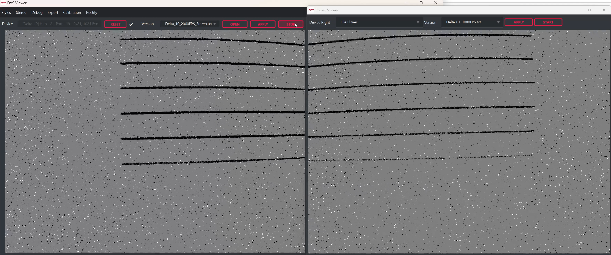
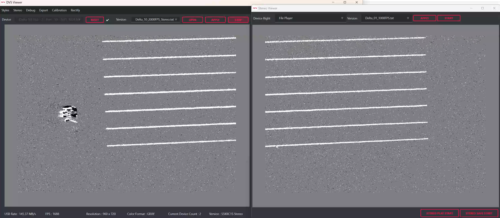
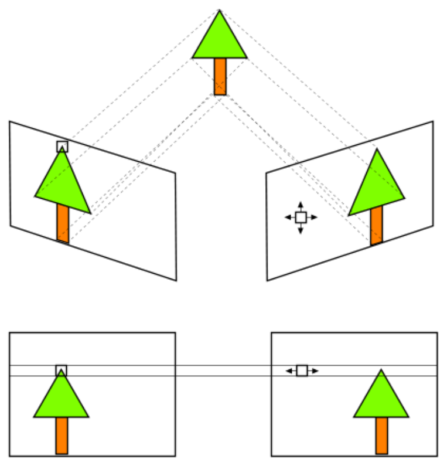
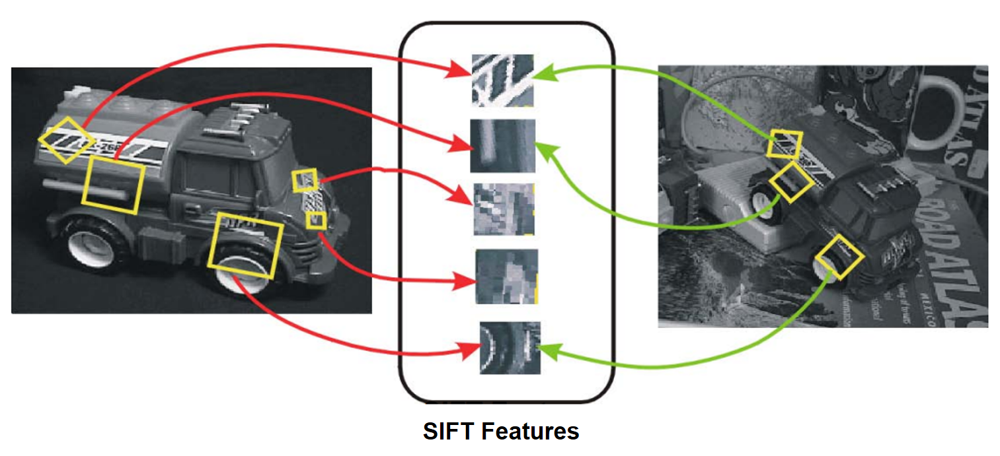
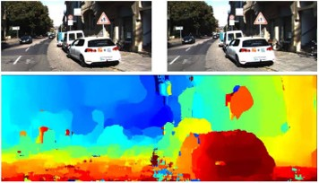
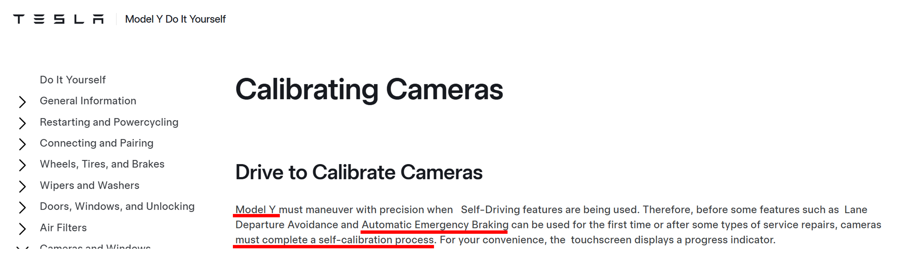
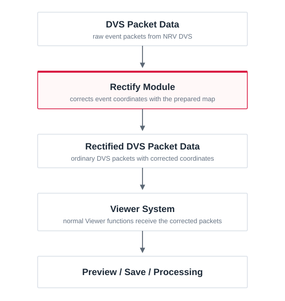

1. DVS 정렬이 필요한 이유
캘리브레이션은 렌즈 왜곡과 카메라의 배치를 측정해 보정에 필요한 값을 구하는 과정입니다. Rectify는 이 값을 실제 DVS 스트림에 적용해 이벤트 좌표를 보정합니다. 이 장에서는 왜 이 보정을 실시간으로 적용해야 하는지와, 보정된 좌표가 스테레오 매칭·특징점 매칭·AI 및 깊이 처리에서 어떤 의미를 가지는지 설명합니다.
1.1 캘리브레이션은 측정하고, Rectify는 적용합니다
캘리브레이션을 완료하면 렌즈와 카메라에 대한 보정값이 calibration.yaml에 저장됩니다. 하지만 이 파일이 존재하는 것만으로 카메라에서 들어오는 이벤트 좌표가 자동으로 바뀌지는 않습니다.
Rectify Setup에서는 이 값을 읽어 좌표 변환에 필요한 정보를 미리 준비합니다. 이후 라이브 스트림이 시작되면 들어오는 DVS 패킷의 이벤트 좌표에 실제 보정을 적용합니다.
calibration.yaml→Rectify Setup→Live DVS에 적용
1.2 렌즈 왜곡은 실제 이벤트 좌표를 바꿉니다
실제 렌즈에서는 장면의 한 점이 이상적인 핀홀 카메라 모델이 예측한 위치와 조금 다른 센서 좌표에 기록될 수 있습니다. 이 차이는 화면 가장자리로 갈수록 커질 수 있으며, 실제로 곧은 선도 이벤트 화면에서는 휘어진 것처럼 보일 수 있습니다.


Undistortion은 하나의 카메라(Mono)에서 캘리브레이션으로 얻은 렌즈 모델을 이용해 좌표 차이를 보정하는 과정입니다. Rectify는 스테레오에서 좌·우 카메라의 왜곡을 함께 보정하고, 같은 장면의 대응점이 가능한 한 같은 영상 행에 놓이도록 좌표를 정렬하는 과정입니다. NRV DVS에서는 새로운 밝기 영상을 만드는 것이 아니라, 각 이벤트가 사용될 위치를 보정된 좌표로 변경합니다.
1.3 왜 실시간으로 정렬해야 하는가
저장된 DVS 데이터를 나중에 보정하는 것도 가능합니다. 하지만 그렇게 하면 이미 Preview, 스테레오 매칭, AI 추론 등에 사용된 라이브 데이터까지 다시 바꿀 수는 없습니다.
따라서 실시간 기능에서 보정된 좌표를 사용하려면, 해당 기능이 데이터를 받기 전에 Rectify를 적용해야 합니다.
1.3.1 스테레오 정렬은 대응점 탐색 범위를 줄여 줍니다
스테레오 깊이 추정은 왼쪽 영상에서 본 한 점과 오른쪽 영상의 같은 점을 찾는 과정에서 시작합니다. 정렬 전에는 같은 점이 좌우 영상에서 가로와 세로 방향으로 모두 어긋날 수 있어 주변의 2차원 영역을 함께 확인해야 합니다. 정렬을 적용하면 대응점이 가능한 한 같은 영상 행에 놓이므로 이후 매칭은 주로 수평 방향에서 수행할 수 있습니다.
예를 들어 세로 방향으로 ±4픽셀까지 확인하던 경우에는 9개의 행을 비교해야 하지만, 정렬 후 같은 행만 사용한다면 세로 방향 후보는 1개가 됩니다. 이는 탐색 후보 수를 설명하기 위한 예이며, 전체 스테레오 알고리즘이 항상 9배 빨라진다는 의미는 아닙니다.

1.3.2 왜곡을 보정하면 같은 특징점을 찾기 쉬워집니다
특징점 매칭은 서로 다른 영상에서 같은 물체의 같은 지점을 찾는 과정입니다. 렌즈 왜곡이 있으면 화면 위치에 따라 같은 구조의 위치와 모양이 조금씩 달라질 수 있어 대응점을 찾기 어려워집니다. 먼저 좌표를 보정하면 이러한 위치에 따른 변형을 줄인 상태에서 특징점을 비교할 수 있습니다.

실제 연구에서도 방사 왜곡을 보정한 뒤 동일한 특징점을 다시 찾는 비율이 20%에서 36%로, 올바른 특징점 매칭 비율이 40%에서 74%로 증가한 결과가 보고되었습니다.
Source: sRD-SIFT: Keypoint Detection and Matching in Images With Radial Distortion
1.3.3 정렬된 영상으로 학습한 모델에는 정렬된 입력이 필요합니다
많은 스테레오 및 깊이 추정 모델은 렌즈 왜곡이 제거되거나 좌·우 영상이 정렬된 데이터를 사용해 학습합니다. 이 경우 모델은 학습 과정에서 본 것과 같은 카메라 좌표 관계가 실제 입력에서도 유지된다고 가정합니다.
그런데 정렬된 영상으로 학습한 모델에 렌즈 왜곡이 그대로 남은 영상을 입력하면, 같은 물체가 학습 때와 다른 위치와 형태로 들어오게 됩니다. 특히 스테레오 모델에서는 좌·우 대응점이 같은 행에 있다는 조건도 깨질 수 있어 깊이 추정 성능이 떨어질 수 있습니다.
따라서 NRV DVS의 Rectify는 기존의 보정·정렬된 영상을 기준으로 학습된 AI 및 Depth 모델에 라이브 DVS 데이터를 연결할 때, 모델이 기대하는 입력 형태에 맞춰 이벤트 좌표를 보정하는 역할을 합니다.

이런 차이는 실제 깊이 추정 성능에도 영향을 줄 수 있습니다. Depth Any Camera에서는 보정된 Perspective 영상 조건을 기준으로 한 모델에 왜곡된 fisheye 영상을 그대로 입력했을 때 Depth RMSE가 2.12에서 3.57로 증가했습니다.
Source: Depth Any Camera: Zero-Shot Metric Depth Estimation from Any Camera
1.3.4 실제 차량 시스템에서도 캘리브레이션은 운용 조건으로 관리됩니다
실제 차량의 ADAS나 자율주행 시스템에서도 카메라 캘리브레이션은 단순한 초기 설정으로 끝나지 않습니다. 카메라 장착 위치가 바뀌거나 캘리브레이션이 정상적으로 완료되지 않으면 일부 기능을 제한하거나 다시 캘리브레이션하도록 요구하는 사례가 있습니다.
즉 카메라 보정값은 저장만 해 두는 정보가 아니라 실제 운용 중 사용하는 영상의 위치 관계에 영향을 주는 조건입니다. 아래 그림은 자동차를 포함한 많은 실시간 카메라 시스템이 캘리브레이션 값을 실제 운용 데이터에 적용하는 단계를 거쳐야 함을 보여줍니다. 이 예시는 자동차가 NRV DVS와 동일한 Rectify 구현을 사용한다는 의미는 아닙니다.

Source: Tesla Model Y DIY — Calibrating Cameras
NRV DVS에서도 캘리브레이션 결과를 실제 라이브 스트림에 실시간으로 적용할 수 있도록 Rectify 기능을 제공합니다. 이를 통해 Viewer의 Preview와 저장뿐 아니라, 이후 스테레오 매칭이나 AI 처리에서도 보정된 이벤트 데이터를 바로 사용할 수 있습니다.
1.4 Rectify는 Viewer 처리 전에 DVS 패킷에 적용됩니다
NRV DVS에서 들어온 원시 패킷은 Preview나 저장 기능으로 전달되기 전에 Rectify 모듈을 통과합니다.
Rectify는 Setup에서 준비한 좌표 맵을 이용해 이벤트 좌표를 보정한 뒤, 다시 일반 DVS 패킷 형식으로 Viewer에 전달합니다. 따라서 Preview, 저장, 후속 처리는 별도의 정렬 전용 데이터 형식 없이 같은 보정 데이터를 사용합니다.

다음: 2장에서는 지금까지 설명한 좌표 보정이 실제로 어떻게 계산되는지 살펴봅니다. 렌즈 왜곡을 수식으로 표현하고, 보정된 화면의 각 위치에 대응하는 원본 센서 좌표를 구한 뒤 DVS 이벤트에 적용하는 과정까지 순서대로 설명합니다.
검색어와 일치하는 섹션 제목이 없습니다.